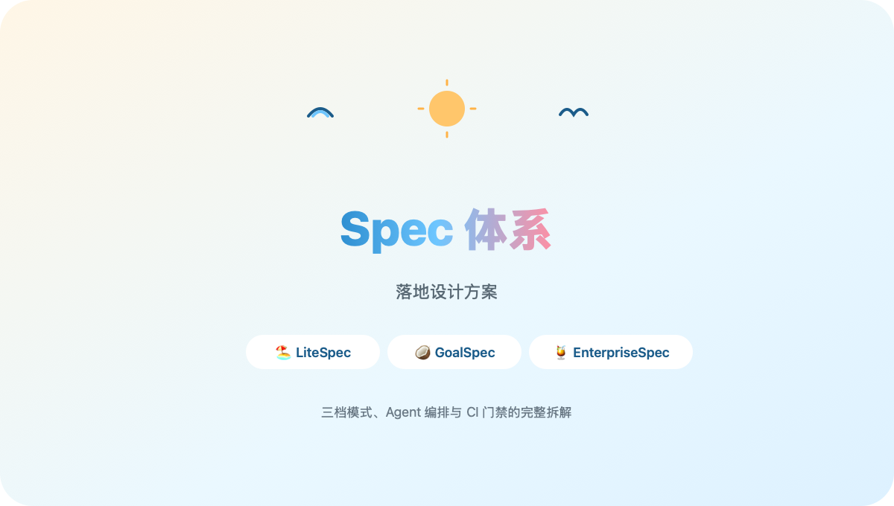
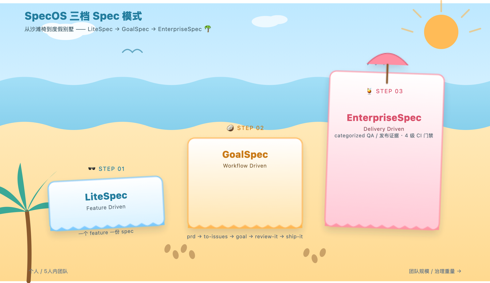
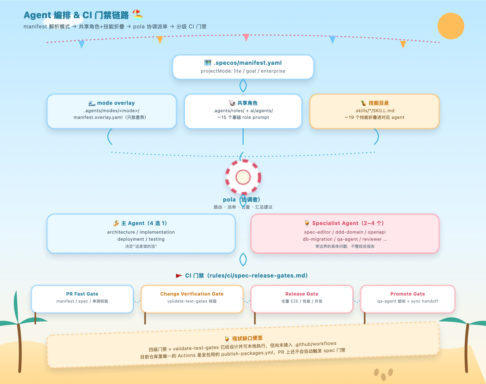

Vibe coding 的产出效率毋庸置疑，但它有一个结构性问题：生成物的可解释性和生成速度不匹配。反复调整能让代码跑起来，但"内部到底怎么做的"这件事，往往要靠事后阅读才能重建。
在多项目并行的场景下，这个问题会被放大——率先撑不住上下文窗口的不是模型，而是维护者本人。每次切回一个项目，都要重新花时间复原"这段代码为什么这么写"的上下文，这部分成本不会随模型能力提升而消失，只会转移。
Spec 体系要解决的正是这个问题：把项目的关键上下文，按固定规范沉淀为可检索的文本，存放在约定目录下。 Agent 后续只需要读取这份 spec ，而不必重新扫描全部代码实现，就能重建对当前代码现状的准确认知。
社区里 openspec 这条路线已经验证过思路的正确性，但其流程颗粒度偏细、维护成本偏高——对个人或小团队而言，"愿意持续维护 spec"本身就是一个不小的门槛。
基于这个判断，本方案没有直接采用 openspec ，而是按复杂度重新设计了一套三档分级体系。
三档模式并非互斥选项，而是随项目规模和治理需求递增的台阶：
| 维度 | LiteSpec | GoalSpec | EnterpriseSpec |
|---|---|---|---|
| 定位 | Feature Driven | Workflow Driven | Delivery Driven |
| 适用规模 | 个人 / ≤5 人团队 | 已按 issue 推进、想要命名闭环的小团队 | ≥20 人、 QA/审计/合规重的团队 |
| 核心节奏 | 一个 feature 一份 spec | prd → prd-to-spec → to-issues → goal → review-it → ship-it 六步闭环 |
分类别 QA 证据 + 正式发布/回滚记录 |
| Token 成本 | 低 | 低到中 | 高 |
| 治理强度 | 简化 | review/ship 门禁，无分类证据 | 全流程治理 |

默认推荐从 LiteSpec 起步；当团队开始需要一个"有名字的"计划-设计-拆分-实现-评审-交付闭环时升级到 GoalSpec ；当功能涉及支付、权限、合规，或需要正式发布/回滚证据时，升级到 EnterpriseSpec 。三档共享一套基础规则：稳定的 Spec ID 命名、单一 design/ 真相层、显式的 current/ 在制品工作区，以及固定的 agent 加载顺序（先读 README ，再读当前状态，再读设计，最后读 feature 细节）。
这是整套体系里承担实际执行职责的部分，也是本文重点拆解的对象。
分层结构
Agent 定义分三层，只在差异处覆盖，不做全量复制：
projectMode 字段在运行时解析加载。加载顺序是确定性的：先解析 projectMode，再加载对应模式的 overlay 清单，然后按"共享角色 prompt → 共享技能 → 模式覆盖 prompt"的顺序拼装，最终得到一个针对当前模式定制、但不重复定义的 agent 上下文。
调度契约：主 Agent + Specialist 的边界控制
编排层引入一个协调角色（内部代号 pola），职责严格限定为：请求路由、拆分派单、报告去重、过滤假阳性、合并出一条可执行建议。它本身不直接执行任务，只做调度决策。
具体调度规则：
这套契约的核心设计目的，是防止"把所有技能塞进一个主 agent"和"把每个 specialist 的完整报告原样拼进最终答案"这两种反模式——前者会让单个 agent 的 prompt 无限膨胀，后者会让结果失去信噪比。

Agent 编排解决的是"生成什么"， CI 门禁解决的是"允许什么进入下一环节"——两者共同构成闭环，否则 spec 只是一份摆设。
门禁分四级，随流程推进依次收紧：
validate-test-gates <specId> 命令； P0/P1 失败、缺规范化结果、缺 trace 、 spec 版本不一致都会拦截。tests/、reviews/、上线/回滚证据。门禁强度与模式绑定： EnterpriseSpec 要求分类证据齐全， GoalSpec 要求 review-it/ship-it 门禁可追溯到具体 issue ， LiteSpec 则允许证据更靠近 feature 切片本身、不强求集中归档。
node scripts/checks/spec-test-gates.mjs <specId>）均已完成，可以在本地跑通；但尚未接入实际的 CI 工作流——目前仓库里唯一生效的自动化流水线是发包脚本， PR 阶段还不会自动触发这套门禁校验。这是一个已知且明确的待办项，不是设计缺失，而是"设计先行、自动化接入滞后"的正常演进节奏。在使用体验上，坚持一个约束：不改变用户既有习惯，不额外教育用户——优先选择大多数人已经熟悉、乐于采用的交互方式，而不是发明一套新范式增加学习成本。
个人客制化则完全放开：当前 agent 能力已经足够支撑"按具体场景微调角色和技能组合"的低成本客制化，这也是选择自建体系而非直接套用 openspec 的核心原因之一——只有对维护成本可控、可持续投入的体系，才有资格被长期依赖。一份无人维护的 spec ，其风险高于完全没有 spec ：它会以过期状态误导后续判断，而这类误判的排查成本，在交付压力持续存在的现实下是不可承受的。
这套体系的关键设计决策可以概括为三点：